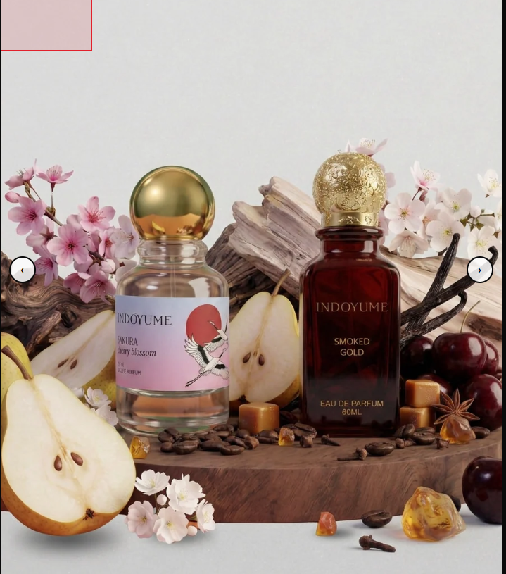
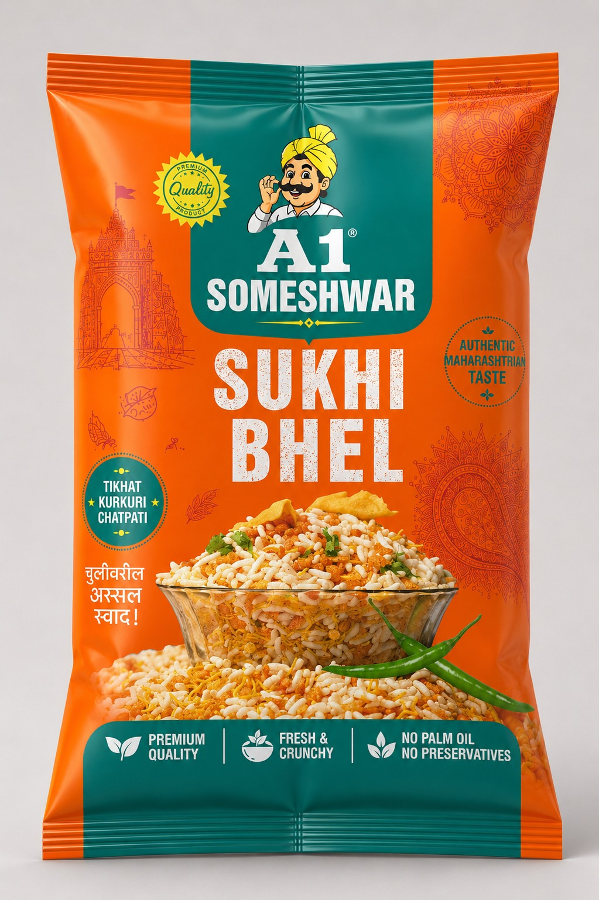
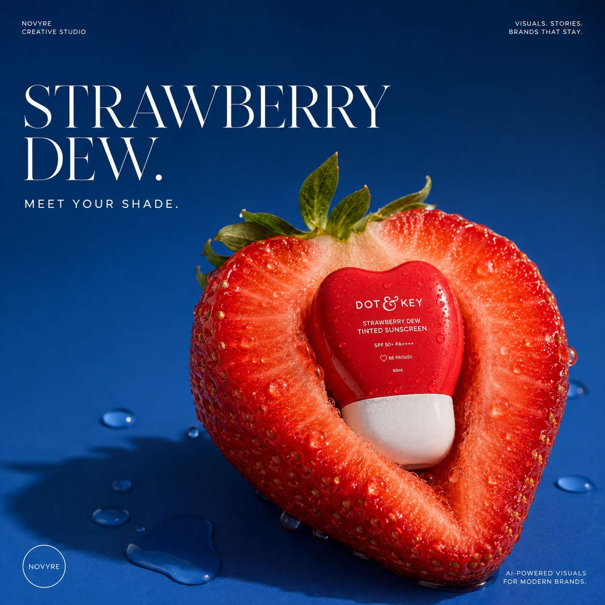
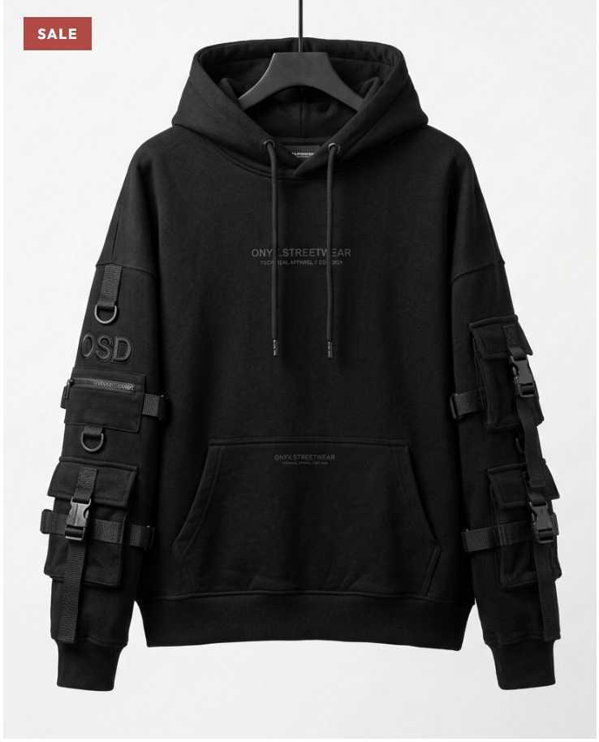

Computer engineering
The foundation: code, logic, and learning how systems fit together.
problem solving & structure ♡QUANTITATIVE FINANCE × HUMAN-CENTERED DESIGN
I’m Dikshita — a quantitative finance grad student with a computer engineering background. I’m interested in the space where markets, AI, and human behavior meet.
math, markets
& a little curiosity ♡
Different interests, same brain. Still connecting the dots.
The foundation: code, logic, and learning how systems fit together.
problem solving & structure ♡Research, data, and the decisions behind numbers.
markets, people, perspectiveMath, models, risk, and better questions about markets.
deeper technical exploration ✦
Visual thinking, human-computer interaction, and how technology feels to use.
another side of the same brainI like problems that need both structure and imagination. Quantitative finance gives me the math and the models; HCI and design make me ask who uses a system, what it feels like, and whether it actually helps.
I’m still figuring out where those interests take me. This site is a home for the things I’m learning, building, researching, and making along the way.
Say hello ↗Some analytical, some visual. All still evolving.
Portfolio analytics, forecasting, and financial modeling.
Explore projects ↗Questions about AI-powered trading, algorithmic collusion, and price efficiency.
Follow the questions ↗Branding, packaging, and AI-assisted campaign concepts.
View selected work ↗A selection of finance and data projects. I’ll keep adding code, methods, and results as I clean up each project.
Portfolio allocation, performance tracking, risk analysis, and investment dashboards.
Portfolio analyticsRiskExploring stock trends and volatility with time-series methods and market data.
Time seriesForecastingA QUESTION I’M EXPLORING
I'm interested in the relationship between AI-powered trading, algorithmic collusion, and price efficiency — especially how automated strategies might change competition and market outcomes.
Early-stage research interest · not a completed study
As I work through the paper and related literature, I’ll add the questions, methods, and evidence that shape my understanding. I won’t present the paper’s findings as my own.
Visual experiments, brand work, and product storytelling.

Packaging and visual storytelling for a Maharashtrian snacks brand.

An AI-assisted visual direction for a playful skincare campaign.

A product-image exploration. Project context and contribution to be confirmed.
Selected visuals shown for portfolio context. Project roles and client details will be expanded only where confirmed.
M.S. Quantitative and Computational Finance
Quantitative Developer Intern · Python-based financial analytics, data workflows, and research support.
Financial & Market Research Analyst Intern · Market, pricing, and competitor research.
Data Analyst · Compliance analysis, reporting, and operational insights.
B.Tech Computer Engineering · GPA 9.08/10; Honors in Data Science.
HAVE A GOOD QUESTION?
Open to conversations around quant finance, research, AI, and thoughtful digital experiences.